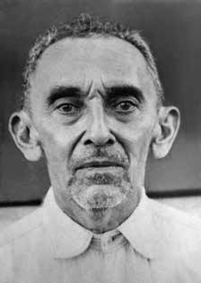

Epaminondas
Gomes
de Oliveira
CIRCUNSTÂNCIAS DA MORTE
Epaminondas Gomes de Oliveira faleceu no Hospital da Guarnição do Exército, em Brasília (DF), após torturas sofridas. À época, a versão oficial divulgada foi a de morte decorrente de choque em razão de anemia e desnutrição. A partir dos acervos disponíveis à Comissão Nacional da Verdade, uma das linhas de pesquisa desenvolvidas consistiu na busca por documentos de operações militares. Dessa forma, utilizando-se como palavra-chave para busca nos acervos a expressão “operação” ou utilizando-se como palavra-chave o nome de uma operação determinada chegou-se, dentre outros documentos, a um conjunto de documentos da Operação Mesopotâmia. Entre tais documentos, foram localizados documentos específicos de Epaminondas Gomes de Oliveira. Nessa documentação estava a Informação nº 834, de 5 de setembro de 1971, do Serviço Nacional de Informações (SNI): 2. (…) em virtude de seu caso ser considerado grave, encaminhado posteriormente ao Hospital Distrital de Brasília, de onde veio a falecer no dia 20 Ago 71, conforme consta da “Declaração de Óbito” (uremia-insuficiência renal). 3. O elemento em pauta encontra-se sepultado na Quadra 504, lote 125, do Cemitério da Asa Sul de Brasília. 4. Conforme dados obtidos do Serviço Funerário de Brasília “nenhuma sepultura poderá ser reaberta e nenhuma exumação poderá ser feita antes de decorridos os prazos de cinco anos para adultos e três anos para infantes.” (Decreto nº 263, de 02 Dez 63)i A informação do SNI apresentou o suposto local de sepultamento de Epaminondas, em um cemitério em Brasília, atualmente denominado Campo da Esperança. Diante da possibilidade de localizar a sepultura, a Comissão Nacional da Verdade verificou in loco, no referido cemitério, que o local indicado no documento correspondia a uma área antiga com lápides sem identificação ou numeração visível. Foram solicitados formalmente à administração do Cemitério Campo da Esperança em Brasília os livros de registro dos sepultamentos do ano de 1971. Verificou-se, em um verso de página, um carimbo atestando o sepultamento de Epaminondas Gomes de Oliveira em jazigo próximo ao indicado no documento oficial do SNI. A diferença de localização da sepultura – entre o disposto no documento oficial e o disposto nos livros de registro do cemitério –, um ardil para dificultar a localização de Epaminondas, não foi suficiente, contudo, para impedir a correta e segura localização dos restos mortais de Epaminondas Gomes de Oliveira. Documento do Arquivo Nacional,ii em análise com os livros de registro do cemitério Campo da Esperança, permitiu a descoberta do número correto da sepultura. A Informação nº 834, do SNI, peça-chave para a pesquisa realizada, também revelou outros elementos investigados pela Comissão Nacional da Verdade. Em primeiro lugar, a suposta causa mortis de Epaminondas Gomes de Oliveira que, conforme o atestado de óbito, seria “uremia-insuficiência renal”. Nesse sentido, a Comissão Nacional da Verdade apurou, a partir de testemunhos de outros presos na mesma unidade – o Pelotão de investigações Criminais do Exército (PIC), em Brasília –, a prática recorrente de tortura por espancamentos e choques elétricos naquele estabelecimento, inclusive da tortura sofrida pelo próprio Epaminondas, desde sua prisão no Pará, duas semanas antes de sua morte. Não é aceitável, portanto, encontrando-se preso e sob torturas, a tese de morte como decorrente de anemia e/ou insuficiência renal – conforme apresentado nos documentos oficiais localizados, que desconsideram e omitem as condições em que se encontrava Epaminondas e que dão a entender que tratou-se de morte decorrente de causas naturais. A morte decorrente de tortura e os eventuais traços de suas consequências nos restos mortais de Epaminondas também foram objeto de investigação pela Comissão, a partir da exumação realizada no cemitério. A suspeita acerca de possíveis traços de violência no cadáver foi reforçada pelo contido no documento do SNI que, ao invocar o decreto nº 263, de 2 de dezembro de 1963, indicou expressamente: “nenhuma sepultura poderá ser reaberta e nenhuma exumação poderá ser feita antes de decorridos os prazos de cinco anos para adultos e três para infantes”. Deu a entender, com isso, para além de zelar pela observância de normas sanitárias e funerárias, que poderia tratar-se de meio para impedir o contato com o cadáver. Dentre os documentos confidenciais sobre Epaminondas Gomes de Oliveira, localizouse também documento que contém declaração de óbito que indica seu falecimento em um hospital militar, o Hospital da Guarnição de Brasília. Arquivo Nacional. iii A filha de Epaminondas Gomes de Oliveira, Beatriz de Oliveira, fez um pedido formal ao então presidente, general Emílio Garrastazu Médici, em 16 de setembro de 1971, solicitando a remoção do corpo do pai para a cidade de Porto Franco/MA. O pedido endereçado ao gabinete da Presidência da República tramitou para o general João Baptista de Oliveira Figueiredo, então chefe do Gabinete Militar. O pedido de informações feito por Beatriz de Oliveira teve despacho assinado pelo coronel chefe do Gabinete do SNI, Jayme Miranda Mariath.iv Após a morte de Epaminondas Gomes de Oliveira, uma sindicância foi aberta: Na sindicância, os seguintes militares foram ouvidos: – Major Volney Pedreira Holanda; – Cabo José Narazeno Rodrigues; – 3º Sargento Eduardo Ribeiro de Souza; – 2º Tenente Leônidas de Abreu e – Capitão Médico Dr. Ancelmo Schwingel, que mais diretamente tiveram contato com o Sr. Epaminondas Gomes de Oliveira, efetuaram sua prisão no dia 7 de agosto de 71, em Marabá (PA), conduziram-no em avião para Brasília (DF), receberam-no e o mantiveram preso no Pelotão de Investigações Criminal (PIC). v A partir dos documentos localizados e do andamento das investigações, a CNV, com a autorização da família e a colaboração de peritos criminais da Polícia Federal e de peritos médico-legistas do Instituto de Medicina Legal da Polícia Civil do Distrito Federal, deu início, em 24 de setembro de 2013, à exumação dos restos mortais que se supunham pertencentes ao ex-prefeito de Pastos Bons (MA). O trabalho de exumação foi finalizado às 19h do mesmo dia e, em seguida, a partir de amostras colhidas de familiares, os restos mortais passaram a ser submetidos a exames de antropologia forense e de DNA. O processo de exumação foi acompanhado pelos dois netos da vítima que doaram material de amostra para exames de DNA, Epaminondas de Oliveira Neto e Cromwell de Oliveira Filho. Epaminondas de Oliveira Neto apresentou à Comissão Nacional da Verdade original do certificado de reservista de seu avô, emitido em 1946, com fotografia, altura e outros dados antropométricos importantes para os trabalhos de antropologia forense. No dia 21 de outubro de 2013, policiais federais em Imperatriz (MA) foram até Porto Franco (MA) e colheram material biológico para exame de DNA de Epaminondas Rocha de Oliveira e Beatriz de Oliveira Rocha, filhos de Epaminondas. Nesse período, foram colhidos 34 (trinta e quatro) depoimentos de vítimas e de familiares de vítimas da Operação Mesopotâmia, visando obter mais informações sobre a prisão e morte de Epaminondas Gomes de Oliveira, bem como de outras graves violações de direitos humanos perpetradas a partir do desencadeamento da operação. Com o intuito de subsidiar os trabalhos periciais de identificação, a Comissão Nacional da Verdade diligenciou junto aos dois hospitais em que Epaminondas Gomes de Oliveira teria permanecido internado antes de falecer. Os dois estabelecimentos, o Hospital de Base de Brasília e o Hospital da Guarnição de Brasília, informaram não dispor de registros sobre o paciente. Necessário registrar, contudo, que o Hospital da Guarnição de Brasília, atualmente chamado de Hospital Militar de Área de Brasília, invocou a necessidade de cumprimento de orientação normativa constante na Mensagem nº F-010-2010 do Comando do Exército, que determinou que todos os pedidos ou requisições de documentos sobre o período 1964 a 1985 fossem respondidos exclusivamente por intermédio do gabinete do Comandante do Exército. Dessa forma, após a equipe da CNV ser atendida no balcão do hospital e receber a informação da possibilidade de localização do prontuário de Epaminondas, desde que feita uma busca minuciosa, inclusive em caixas arquivadas, adveio resposta do comando do Exército informando “que não foram encontrados arquivos relativos ao paciente”. A prisão de Epaminondas Gomes de Oliveira, como já indicado, se inseriu no contexto da Operação Mesopotâmia, que prendeu lideranças políticas da região fronteiriça entre Maranhão, Pará e Goiás (atual Tocantins). A Operação, conduzida pela 3ª Brigada de Infantaria CMP/11ª RM, realizou um total de 32 (trinta e duas) prisões sem a observância das formalidades legais exigíveis.vi De acordo com o relatório da operação, classificado como secreto e intitulado Relatório da Operação Mesopotâmia, a ação passou a servir de modelo para novas incursões militares na região. A investigação realizada pela CNV constatou a participação de 36 militares, incluindo 9 oficiais, sob o comando de oficial general. A Operação Mesopotâmia realizou deslocamentos planejados, com equipes de militares definidas conforme os grupos de opositores políticos a serem presos. Foram efetuados deslocamentos via terrestre e via aérea para as cidades de Tocantinópolis/GO (atual TO), em 2/8/1971; Imperatriz/MA, em 4 e 5/8/1971, e regresso aéreo conduzindo 10 presos, em 7/8/1971. Houve ainda destacamentos por via terrestre em 10/8/1971 e em 11/8/1971, novamente conduzindo outros três presos. Em 12/8/1971, ocorreu regresso aéreo a Brasília transportando um total de 13 (treze) presos; dentre eles, comprovadamente, Epaminondas Gomes de Oliveira. Dentre outros trechos de interesse no relatório, destaca-se a avaliação acerca da importância do apoio da Força Aérea Brasileira (FAB) e da denominada Operação Presença, uma exibição pública e ostensiva a ser feita ao final da ação militar.vii A Comissão Nacional da Verdade apurou, a partir de testemunhos diretos, que a demonstração-tipo em Porto Franco (MA) consistiu na exibição dos presos em caminhão aberto, acorrentados ou amarrados com cordas, de forma humilhante, alguns deles após terem sofrido espancamentos. O documento mais completo sobre a referida operação é um relatório de 32 páginas que apresenta: finalidade; ações; estratégias; depoimentos colhidos; prisões efetuadas e o contingente de oficiais participantes.viii Assinado pelo general de brigada Antônio Bandeira, que em 1972 viria a ser responsável por novas ações militares na região do Araguaia, o relatório destaca que a Operação Mesopotâmia atingiu os objetivos de: (i) desarticular a movimentação política de esquerda na área; (ii) identificar e prender pessoas consideradas subversivas pelo regime (…); (iii)servir de modelo para outras operações. Outro documento de interesse revela que a Operação Mesopotâmia, para além de difundida ao alto comando militar, também foi levada ao conhecimento de outras autoridades. É o que indica o documento do Serviço Nacional de Informações, que determina o encaminhamento do relatório com os resultados da Operação ao governador do Estado do Maranhão e ao Ministro do Interior, em 19 de setembro de 1971. ix No mês seguinte à exumação de Epaminondas Gomes de Oliveira, entre 21 e 23 de outubro de 2013, assessores da Comissão Nacional da Verdade, acompanhados do médico legista e antropólogo forense do Instituto de Medicina Legal da Polícia Civil do Distrito Federal, Aluísio Trindade Filho, viajaram a Imperatriz (MA), Porto Franco (MA) e Tocantinópolis (TO) para o prosseguimento das investigações. Nesse período, foram colhidos 34 (trinta e quatro) depoimentos de vítimas e de familiares de vítimas da Operação Mesopotâmia com o intuito de apurar graves violações de direitos humanos cometidas com o desencadeamento da operação militar, bem como de colher informações específicas sobre a prisão, tortura, morte e ocultação do cadáver de Epaminondas Gomes de Oliveira. As vítimas diretas ouvidas foram unânimes em afirmar que foram presas de forma arbitrária, sem a apresentação de mandado judicial ou ordem de prisão; sem a apresentação de motivo da prisão ou nota de culpa; sem a autorização de qualquer contato com a família ou advogado. De modo geral, as prisões ocorreram sob espancamentos e ameaças – inclusive ameaças de morte – na presença de crianças, adolescentes, mulheres grávidas e idosos, e culminaram com a exibição pública dos presos, acorrentados de modo humilhante em caminhão do Exército, muitos deles ainda sem compreender a razão da prisão, vez que meros simpatizantes ou frequentadores de reuniões políticas na região. Os depoimentos prestados à equipe da Comissão Nacional da Verdade em Porto Franco (MA) e em Tocantinópolis (TO) dão conta das torturas sofridas, inclusive das torturas sofridas especificamente por Epaminondas: Ficamos lá, (…), passamos o dia, quando foi à noite, na segunda noite, eles chegaram com o senhor Epaminondas lá, algemado. „Você conhece este homem ai?‟ É claro que conhecia, eu morava vizinho do Epaminondas, na casa dele, ainda passo ali onde é a casa da mãe dele. Era emendada com a do Epaminondas, era vizinho nosso. Inclusive, gente muita boa. Pessoa importante o Epaminondas. “Eu conheço, é meu vizinho.” Também foi a pergunta que me fizeram. Pegaram ele e levaram lá para a Santa Casa, aquela lá no acampamento da Rodovale [depois DNER], levaram ele pra lá, lá judiaram dele (…) deram choque no ouvido dele e ele gritava. Torturado algemado e com o aparelho. Eu não recordo se era para cima algemado ou se era para trás, eu não recordo. Ele em uma cadeira, ele com um aparelho magnético com um negócio em um ouvido e no outro. Ele dava gritos horríveis, gritando, dando choques no ouvido dele batendo nele com a palmatória. Isso eu vi. Eu vi lá em Imperatriz. […] Eu os vi fazendo isso. Quando foi no outro dia, eles embarcaram ele num transporte lá, que eu não sei que transporte era, e levaram para o aeroporto e de lá foram embora. […] E até hoje eu não sei porque é que eu fui preso. Eu nunca fiz parte disso, eu fui só amigo do senhor Epaminondas.x Na época da morte de Epaminondas, o reservista do Exército Anísio Coutinho Aguiar, que serviu entre 1971 e 1988, estava lotado em Brasília. Ele viu Epaminondas em Brasília após sua prisão e pouco antes de sua morte: Conheci o Epaminondas desde 1965, quando eu estudava em Porto Franco. Eu ia muito a casa dele para ele me dar orientações na matéria de português. […] Eu fui a Brasília, soube que ele estava preso lá e pedi para ir lá. Falei com o chefe da 2ª Seção para ir até lá. O Epaminondas estava muito debilitado, doente e muito abatido. Conversei rapidamente com ele. Ele estava muito estranho também.xi Em 29 de agosto de 2014, a Comissão Nacional da Verdade realizou audiência pública em Brasília para divulgar o resultado da análise pericial realizada pelo Instituto de Medicina Legal da Polícia Civil do Distrito Federal, que confirmou a identificação dos restos mortais de Epaminondas Gomes de Oliveira. Após a audiência, os restos mortais de Epaminondas Gomes de Oliveira foram trasladados para Porto Franco (MA) onde, em 31 de agosto de 2014, uma nova audiência pública sobre o caso foi realizada. Em ambas as audiências, foram apresentados o resultado da investigação e o laudo. O laudo, assinado pelos médicos legistas Aluísio Trindade Filho e Malthus Fonseca Galvão, e pela odonto-legista Heloísa Maria da Costa, de fevereiro de 2014, conclui que os exames periciais antropológicos, documentais e testemunhais colhidos apontam “que o esqueleto humano exumado em 24 de setembro de 2013, da sepultura 135, da quadra 504 e do setor A do Cemitério Campo da Esperança, representa os restos mortais de Epaminondas Gomes de Oliveira”. O laudo detalha os cinco principais pontos que permitiram aos legistas do IML concluírem que os restos mortais são de Epaminondas: – Perfil Biológico: o perfil biológico obtido do esqueleto estudado, composto pelos parâmetros sexo, idade, altura e ancestralidade geográfica demonstrou compatibilidade plena com os dados disponíveis sobre Epaminondas. Os exames apontaram que o esqueleto é de um homem mestiço, medindo entre 1m65,5 e 1m72,5 e de idade superior a 60 anos. O certificado de reservista de Epaminondas, emitido em 1935, obtido pela família e entregue à CNV aponta que Epaminondas tinha 1m72 e era de “cor morena”; – Sobreposição crânio fotográfica: Os peritos do IML de Brasília reconstituíram boa parte do crânio do esqueleto exumado e compararam imagens do crânio com a fotografia frontal de Epaminondas, já idoso, entregue pela família à CNV, e uma reprodução de fotografia de perfil esquerdo de Epaminondas, já preso pelo Exército, obtida pela CNV. As imagens foram decisivas para que o estudo comparativo demonstrasse “compatibilidade plena com o contorno do crânio observado nas fotografias de Epaminondas”; – Restauração dentária: Na exumação de Epaminondas foram encontrados alguns dos dentes da vítima, entre eles o primeiro molar superior direito que apresentou compatibilidade com as informações prestadas por Inês da Costa Oliveira, nora de Epaminondas, durante série de depoimentos colhidos pela CNV e pelo médico legista Aluísio Trindade em diligência realizada na cidade de Porto Franco (MA), em 21 de outubro de 2013. Ela afirmou que Epaminondas “tinha um dente prateado atrás da presa (canino)”. Além disso, o ex-dentista prático Colemar Rodrigues do Egito, irmão de Rui Rodrigues do Egito, que atendia Epaminondas, confirmou que o material usado na prótese já era disponível nos anos 60 no Maranhão; – Fitas no corpo: Na exumação foram encontradas fitas compatíveis com esparadrapo envolvendo os tornozelos e os punhos de Epaminondas, além de uma terceira fita, sobre o peito. As fitas confirmam que os restos mortais exumados são de uma pessoa que morreu em hospital e cujo corpo não pode ser preparado pela família, uma vez que não foram encontrados vestígios de que o corpo tenha sido vestido para o enterro. O tronco estava vestido por uma camisa de cor amarela; – Aspecto do esqueleto: os ossos quebradiços e entremeados por raízes demonstram que o enterro é muito antigo, sendo compatível com a data da morte de Epaminondas, ocorrida em 20 de agosto de 1971. Segundo o laudo, a qualidade do material ósseo, sepultado há mais de quarenta anos, não permitiu a extração de DNA em quantidade suficiente para que amostras pudessem ser comparadas com o DNA extraído de filhos e netos de Epaminondas, trabalho feito pelo Departamento de Polícia Federal. A ausência de material apto a exame de DNA, entretanto, não impediu a identificação da vítima pelos dados antropológicos. Os restos mortais de Epaminondas não apresentavam lesões típicas de tiro ou trauma, o que não permitiu aos peritos ratificar, desmentir ou acrescentar elementos à causa mortis atestada pelo médico do Exército Ancelmo Schwingel: coma anêmico, choque, desnutrição e anemia. Após o término da audiência em Porto Franco (MA), com um público de aproximadamente 300 pessoas, a urna funerária com os restos mortais de Epaminondas Gomes de Oliveira foi trazida por seus netos perante o público para receber unção religiosa. Em seguida, realizou-se cortejo até o cemitério Jardim da Saudade. Sob canções populares e religiosas entoadas, ocorreu o sepultamento de Epaminondas Gomes de Oliveira, em jazigo familiar, ao lado de sua esposa e viúva.
Epaminondas Gomes de Oliveira died at the Army Garnição Hospital, in Brasília (DF), after suffering torture. At the time, the official version released was that of death resulting from shock due to anemia and malnutrition. Based on the collections available to the National Truth Commission, one of the lines of research developed consisted of searching for documents from military operations. In this way, using the expression “operation” as a keyword to search the collections or using the name of a specific operation as a keyword, we arrived, among other documents, at a set of documents from Operation Mesopotamia. Among these documents, specific documents from Epaminondas Gomes de Oliveira were located. This documentation included Information No. 834, dated September 5, 1971, from the National Information Service (SNI): 2. (…) because his case was considered serious, he was later sent to the Brasília District Hospital, where he died on August 20, 71, as stated in the “Death Declaration” (uremia-renal failure). 3. The element in question is buried in Block 504, lot 125, of the Asa Sul Cemetery in Brasília. 4. According to data obtained from the Brasília Funeral Service, “no grave may be reopened and no exhumation may be carried out before the deadlines of five years for adults and three years for infants have elapsed.” (Decree nº 263, of 02 Dec 63)i Information from the SNI presented the supposed burial place of Epaminondas, in a cemetery in Brasília, currently called Campo da Esperança. Faced with the possibility of locating the grave, the National Truth Commission verified on site, in the aforementioned cemetery, that the location indicated in the document corresponded to an old area with tombstones without visible identification or numbering. The administration of the Campo da Esperança Cemetery in Brasília was formally requested to provide records of burials from the year 1971. A stamp was found on the back of the page attesting to the burial of Epaminondas Gomes de Oliveira in a tomb close to that indicated in the official SNI document. The difference in location of the tomb – between what is set out in the official document and what is set out in the cemetery's record books –, a ruse to make it difficult to locate Epaminondas, was not enough, however, to prevent the correct and safe location of the remains of Epaminondas Gomes de Oliveira. Document from the National Archives,ii in analysis with the Campo da Esperança cemetery record books, allowed the discovery of the correct grave number. Information nº 834, from the SNI, a key piece for the research carried out, also revealed other elements investigated by the National Truth Commission. Firstly, the supposed cause of death of Epaminondas Gomes de Oliveira which, according to the death certificate, would be “uremia-renal failure”. In this sense, the National Truth Commission established, based on testimonies from other prisoners in the same unit – the Army Criminal Investigation Platoon (PIC), in Brasília –, the recurrent practice of torture by beatings and electric shocks in that establishment, including the torture suffered by Epaminondas himself, since his arrest in Pará, two weeks before his death. Therefore, being imprisoned and under torture, the thesis that death was due to anemia and/or kidney failure is not acceptable - as presented in the official documents located, which disregard and omit the conditions in which Epaminondas was found and which imply that it was a death due to natural causes. The death resulting from torture and the possible traces of its consequences in Epaminondas' mortal remains were also the subject of investigation by the Commission, based on the exhumation carried out in the cemetery. The suspicion regarding possible traces of violence in the corpse was reinforced by what was contained in the SNI document which, when invoking decree nº 263, of December 2, 1963, expressly indicated: “no grave may be reopened and no exhumation may be carried out before the deadlines of five years for adults and three for infants have elapsed”. This meant, in addition to ensuring compliance with sanitary and funeral standards, that it could be a means of preventing contact with the corpse. Among the confidential documents about Epaminondas Gomes de Oliveira, there was also a document containing a death certificate indicating his death in a military hospital, the Hospital da Garnição de Brasília. National Archives. iii Epaminondas Gomes de Oliveira's daughter, Beatriz de Oliveira, made a formal request to the then president, General Emílio Garrastazu Médici, on September 16, 1971, requesting the removal of her father's body to the city of Porto Franco/MA. The request addressed to the office of the Presidency of the Republic was processed by General João Baptista de Oliveira Figueiredo, then head of the Military Cabinet. The request for information made by Beatriz de Oliveira was signed by the chief colonel of the SNI Office, Jayme Miranda Mariath.iv After the death of Epaminondas Gomes de Oliveira, an investigation was opened: In the investigation, the following military personnel were heard: – Major Volney Pedreira Holanda; – Corporal José Narazeno Rodrigues; – 3rd Sergeant Eduardo Ribeiro de Souza; – 2nd Lieutenant Leônidas de Abreu and – Medical Captain Dr. Ancelmo Schwingel, who had more direct contact with Mr. Epaminondas Gomes de Oliveira, arrested him on August 7, 71, in Marabá (PA), took him on a plane to Brasília (DF), received him and kept him detained in the Criminal Investigations Squad (PIC). v Based on the documents located and the progress of the investigations, the CNV, with the authorization of the family and the collaboration of criminal experts from the Federal Police and forensic experts from the Institute of Legal Medicine of the Civil Police of the Federal District, began, on September 24, 2013, the exhumation of the mortal remains believed to belong to the former mayor of Pastos Bons (MA). The exhumation work was completed at 7pm on the same day and then, based on samples collected from family members, the remains began to be subjected to forensic anthropology and DNA examinations. The exhumation process was accompanied by the victim's two grandchildren who donated sample material for DNA tests, Epaminondas de Oliveira Neto and Cromwell de Oliveira Filho. Epaminondas de Oliveira Neto presented to the National Truth Commission the original of his grandfather's reservist certificate, issued in 1946, with photography, height and other anthropometric data important for forensic anthropology work. On October 21, 2013, federal police officers in Imperatriz (MA) went to Porto Franco (MA) and collected biological material for DNA testing from Epaminondas Rocha de Oliveira and Beatriz de Oliveira Rocha, Epaminondas' children. During this period, 34 (thirty-four) statements were collected from victims and family members of victims of Operation Mesopotamia, aiming to obtain more information about the arrest and death of Epaminondas Gomes de Oliveira, as well as other serious human rights violations perpetrated after the operation was launched. In order to support the expert identification work, the National Truth Commission contacted the two hospitals in which Epaminondas Gomes de Oliveira was admitted before his death. The two establishments, the Hospital de Base de Brasília and the Hospital da Garnição de Brasília, reported that they did not have any records about the patient. It is necessary to note, however, that the Brasília Garnição Hospital, currently called the Brasília Area Military Hospital, invoked the need to comply with the normative guidance contained in Message No. F-010-2010 from the Army Command, which determined that all requests or requests for documents relating to the period 1964 to 1985 were answered exclusively through the Army Commander's office. Thus, after the CNV team was seen at the hospital counter and received information about the possibility of locating Epaminondas' medical records, provided a thorough search was carried out, including in archived boxes, a response came from the Army command stating “that no files relating to the patient were found”. The arrest of Epaminondas Gomes de Oliveira, as already indicated, was part of the context of Operation Mesopotamia, which arrested political leaders from the border region between Maranhão, Pará and Goiás (currently Tocantins). The Operation, conducted by the 3rd CMP/11th RM Infantry Brigade, carried out a total of 32 (thirty-two) arrests without observing the required legal formalities.vi According to the operation report, classified as secret and entitled Operation Mesopotamia Report, the action began to serve as a model for new military incursions in the region. The investigation carried out by the CNV found the participation of 36 military personnel, including 9 officers, under the command of a general officer. Operation Mesopotamia carried out planned deployments, with military teams defined according to the groups of political opponents to be arrested. Travels were carried out by land and air to the cities of Tocantinópolis/GO (currently TO), on 2/8/1971; Imperatriz/MA, on 4 and 5/8/1971, and return by air carrying 10 prisoners, on 7/8/1971. There were also detachments by land on 10/8/1971 and on 11/8/1971, again taking three other prisoners. On 8/12/1971, there was an air return to Brasília transporting a total of 13 (thirteen) prisoners; among them, demonstrably, Epaminondas Gomes de Oliveira. Among other sections of interest in the report, the assessment of the importance of support from the Brazilian Air Force (FAB) and the so-called Operation Presença, a public and ostentatious display to be made at the end of the military action, stands out. beatings. The most complete document on this operation is a 32-page report that presents: purpose; actions; strategies; statements collected; arrests made and the contingent of participating officers.viii Signed by Brigadier General Antônio Bandeira, who in 1972 would become responsible for new military actions in the Araguaia region, the report highlights that Operation Mesopotamia achieved the objectives of: (i) dismantling the left-wing political movement in the area; (ii) identify and arrest people considered subversive by the regime (…); (iii) serve as a model for other operations. Another document of interest reveals that Operation Mesopotamia, in addition to being disseminated to the high military command, was also brought to the attention of other authorities. This is what the document from the National Information Service indicates, which determines the forwarding of the report with the results of the Operation to the governor of the State of Maranhão and the Minister of the Interior, on September 19, 1971. ix In the month following the exhumation of Epaminondas Gomes de Oliveira, between October 21 and 23, 2013, advisors from the National Truth Commission, accompanied by the coroner and forensic anthropologist from the Institute of Legal Medicine of the Civil Police of the Federal District, Aluísio Trindade Filho, traveled to Imperatriz (MA), Porto Franco (MA) and Tocantinópolis (TO) to continue the investigations. During this period, 34 (thirty-four) statements were collected from victims and family members of victims of Operation Mesopotamia with the aim of investigating serious human rights violations committed with the launch of the military operation, as well as collecting specific information about the arrest, torture, death and concealment of the corpse of Epaminondas Gomes de Oliveira. The direct victims interviewed were unanimous in stating that they were arrested arbitrarily, without presenting a court warrant or arrest order; without presenting a reason for arrest or a note of guilt; without authorizing any contact with the family or lawyer. In general, the arrests took place under beatings and threats – including death threats – in the presence of children, teenagers, pregnant women and the elderly, and culminated in the public display of the prisoners, chained in a humiliating way in an Army truck, many of them still not understanding the reason for the arrest, as they were mere supporters or attendees of political meetings in the region. The statements given to the National Truth Commission team in Porto Franco (MA) and Tocantinópolis (TO) give an account of the torture suffered, including the torture suffered specifically by Epaminondas: We stayed there, (…), we spent the day, when it was night, on the second night, they arrived with Mr. Epaminondas there, handcuffed. 'Do you know this man there?' Of course I did, I lived next door to Epaminondas, in his house, I still pass by where his mother's house is. It was connected to Epaminondas' house, he was our neighbor. In fact, very good people. Epaminondas is an important person. “I know him, he's my neighbor.” It was also the question I was asked. They caught him and took him to Santa Casa, the one in the Rodovale camp [later DNER], they took him there, they mocked him there (…) they shocked him in the ear and he screamed. Tortured in handcuffs and with the device. I don't remember if it was handcuffed upwards or if it was backwards, I don't remember. He's in a chair, he's wearing a magnetic device with something in one ear and the other. He made horrible screams, screaming, shocking his ear by hitting him with the paddle. This I saw. I saw it there in Imperatriz. […] I saw them doing it. The next day, they boarded him in a transport there, I don't know what transport it was, and took him to the airport and left from there. […] And to this day I don’t know why I was arrested. I was never part of that, I was just a friend of Mr. Epaminondas.x At the time of Epaminondas' death, Army reservist Anísio Coutinho Aguiar, who served between 1971 and 1988, was stationed in Brasília. He saw Epaminondas in Brasília after his arrest and shortly before his death: I knew Epaminondas since 1965, when I was studying in Porto Franco. I went to his house a lot so he could give me guidance on Portuguese. […] I went to Brasília, found out that he was imprisoned there and asked to go there. I spoke to the head of the 2nd Section to go there. Epaminondas was very weak, sick and very depressed. I spoke quickly with him. He looked very strange too.xi On August 29, 2014, the National Truth Commission held a public hearing in Brasília to disclose the results of the expert analysis carried out by the Institute of Legal Medicine of the Civil Police of the Federal District, which confirmed the identification of the mortal remains of Epaminondas Gomes de Oliveira. After the hearing, the remains of Epaminondas Gomes de Oliveira were transferred to Porto Franco (MA) where, on August 31, 2014, a new public hearing on the case was held. At both hearings, the results of the investigation and the report were presented. The report, signed by coroners Aluísio Trindade Filho and Malthus Fonseca Galvão, and by forensic dentist Heloísa Maria da Costa, from February 2014, concludes that the anthropological, documentary and testimonial examinations collected indicate “that the human skeleton exhumed on September 24, 2013, from grave 135, block 504 and sector A of the Cemetery Campo da Esperança, represents the mortal remains of Epaminondas Gomes de Oliveira”. The report details the five main points that allowed the IML coroners to conclude that the remains are those of Epaminondas: – Biological Profile: the biological profile obtained from the studied skeleton, consisting of the parameters sex, age, height and geographic ancestry, demonstrated full compatibility with the available data on Epaminondas. The examinations showed that the skeleton is that of a mixed-race man, measuring between 1m65.5 and 1m72.5 and over 60 years old. Epaminondas' reservist certificate, issued in 1935, obtained by the family and delivered to the CNV, shows that Epaminondas was 1m72 tall and “dark in color”; – Photographic skull overlay: Experts from the IML in Brasília reconstructed a large part of the skull of the exhumed skeleton and compared images of the skull with the frontal photograph of Epaminondas, already elderly, handed over by the family to the CNV, and a reproduction of the left profile photograph of Epaminondas, already arrested by the Army, obtained by the CNV. The images were decisive for the comparative study to demonstrate “full compatibility with the contour of the skull observed in Epaminondas’ photographs”; – Dental restoration: During the exhumation of Epaminondas, some of the victim's teeth were found, including the upper right first molar, which was compatible with the information provided by Inês da Costa Oliveira, Epaminondas' daughter-in-law, during a series of testimonies collected by the CNV and the coroner Aluísio Trindade in an investigation carried out in the city of Porto Franco (MA), on October 21, 2013. She stated that Epaminondas “it had a silver tooth behind the fang (canine)”. Furthermore, the former practicing dentist Colemar Rodrigues from Egypt, brother of Rui Rodrigues from Egypt, who attended Epaminondas, confirmed that the material used in the prosthesis was already available in the 60s in Maranhão; – Tapes on the body: During the exhumation, tapes compatible with adhesive tape were found wrapping around Epaminondas’ ankles and wrists, as well as a third tape over his chest. The tapes confirm that the exhumed remains are of a person who died in hospital and whose body could not be prepared by the family, as no traces were found that the body had been dressed for burial. The torso was dressed in a yellow shirt; – Appearance of the skeleton: the brittle bones interspersed with roots demonstrate that the burial is very old, being compatible with the date of Epaminondas' death, which occurred on August 20, 1971. According to the report, the quality of the bone material, buried more than forty years ago, did not allow the extraction of DNA in sufficient quantity so that samples could be compared with the DNA extracted from Epaminondas' children and grandchildren, work carried out by the Police Department Federal. The absence of material suitable for DNA testing, however, did not prevent the identification of the victim using anthropological data. Epaminondas' mortal remains did not present typical gunshot or trauma injuries, which did not allow experts to ratify, deny or add elements to the cause of death certified by Army doctor Ancelmo Schwingel: anemic coma, shock, malnutrition and anemia. After the end of the hearing in Porto Franco (MA), with an audience of approximately 300 people, the funeral urn with the mortal remains of Epaminondas Gomes de Oliveira was brought by his grandchildren before the public to receive religious anointing. Then, there was a procession to the Jardim da Saudade cemetery. Under popular and religious songs, Epaminondas Gomes de Oliveira was buried in a family tomb, next to his wife and widow.
Epaminondas Gomes de Oliveira murió en el Hospital Militar Garnição, en Brasilia (DF), tras sufrir torturas. En ese momento, la versión oficial difundida fue la de muerte producto del shock por anemia y desnutrición. A partir de los acervos de que dispone la Comisión Nacional de la Verdad, una de las líneas de investigación desarrolladas consistió en la búsqueda de documentos provenientes de operaciones militares. De esta manera, utilizando la expresión “operación” como palabra clave para buscar en las colecciones o utilizando como palabra clave el nombre de una operación concreta, llegamos, entre otros documentos, a un conjunto de documentos de la Operación Mesopotamia. Entre estos documentos se localizaron documentos específicos de Epaminondas Gomes de Oliveira. Esta documentación incluía la Información nº 834, de 5 de septiembre de 1971, del Servicio Nacional de Informaciones (SNI): 2. (…) por considerarse grave su caso, fue posteriormente remitido al Hospital Distrital de Brasilia, donde falleció el 20 de agosto de 71, según consta en la “Declaración de Defunción” (uremia-insuficiencia renal). 3. El elemento en cuestión se encuentra enterrado en el Bloque 504, lote 125, del Cementerio de Asa Sul, en Brasilia. 4. Según datos obtenidos del Servicio Funerario de Brasilia, “ninguna tumba podrá ser reabierta ni ninguna exhumación podrá realizarse antes de que transcurran los plazos de cinco años para adultos y tres años para niños”. (Decreto nº 263, de 02 de diciembre de 63)i Información del SNI presentó el supuesto lugar de sepultura de Epaminondas, en un cementerio de Brasilia, actualmente llamado Campo da Esperança. Ante la posibilidad de localizar la tumba, la Comisión Nacional de la Verdad comprobó in situ, en el citado cementerio, que la ubicación señalada en el documento correspondía a una antigua zona con lápidas sin identificación ni numeración visible. Se solicitó formalmente a la administración del Cementerio Campo da Esperança, en Brasilia, que proporcionara registros de entierros del año 1971. Se encontró un sello en el reverso de la página que atestigua el entierro de Epaminondas Gomes de Oliveira en una tumba cercana a la indicada en el documento oficial del SNI. La diferencia en la ubicación de la tumba – entre lo que figura en el documento oficial y lo que figura en los libros de registro del cementerio –, un ardid para dificultar la localización de Epaminondas, no fue suficiente, sin embargo, para impedir la localización correcta y segura de los restos de Epaminondas Gomes de Oliveira. Documento del Archivo Nacionalii, en análisis con los libros de registro del cementerio de Campo da Esperança, permitió descubrir el número correcto de tumba. La información nº 834, del SNI, pieza clave para la investigación realizada, también reveló otros elementos investigados por la Comisión Nacional de la Verdad. En primer lugar, la supuesta causa de muerte de Epaminondas Gomes de Oliveira que, según el certificado de defunción, sería “uremia-insuficiencia renal”. En ese sentido, la Comisión Nacional de la Verdad estableció, a partir de testimonios de otros presos de la misma unidad –el Pelotón de Investigación Criminal (PIC) del Ejército, en Brasilia–, la práctica recurrente de torturas con golpes y descargas eléctricas en ese establecimiento, incluidas las torturas sufridas por el propio Epaminondas, desde su arresto en Pará, dos semanas antes de su muerte. Por lo tanto, estando preso y bajo tortura, no es aceptable la tesis de que la muerte se debió a anemia y/o insuficiencia renal, tal como se presenta en los documentos oficiales localizados, que desconocen y omiten las condiciones en las que se encontró a Epaminondas y que implican que se trató de una muerte por causas naturales. La muerte producto de las torturas y las posibles huellas de sus consecuencias en los restos mortales de Epaminondas también fueron objeto de investigación por parte de la Comisión, a partir de la exhumación realizada en el cementerio. La sospecha sobre posibles rastros de violencia en el cadáver se vio reforzada por lo contenido en el documento del SNI que, al invocar el decreto nº 263, del 2 de diciembre de 1963, indicaba expresamente: “ninguna fosa podrá reabrirse y ninguna exhumación podrá realizarse antes de que transcurran los plazos de cinco años para adultos y tres para niños”. Esto significaba, además de garantizar el cumplimiento de las normas sanitarias y funerarias, que podía ser un medio para evitar el contacto con el cadáver. Entre los documentos confidenciales sobre Epaminondas Gomes de Oliveira, también había un documento que contenía un certificado de defunción que indicaba su muerte en un hospital militar, el Hospital da Garnição de Brasília. Archivos Nacionales. iii La hija de Epaminondas Gomes de Oliveira, Beatriz de Oliveira, hizo una solicitud formal al entonces presidente, general Emílio Garrastazu Médici, el 16 de septiembre de 1971, solicitando el traslado del cuerpo de su padre a la ciudad de Porto Franco/MA. El pedido dirigido a la Presidencia de la República fue tramitado por el general João Baptista de Oliveira Figueiredo, entonces jefe del Gabinete Militar. La solicitud de información realizada por Beatriz de Oliveira fue firmada por el coronel jefe de la Oficina del SNI, Jayme Miranda Mariath.iv Luego de la muerte de Epaminondas Gomes de Oliveira, se abrió una investigación: En la investigación fueron escuchados los siguientes militares: – Mayor Volney Pedreira Holanda; – Cabo José Narazeno Rodrigues; – Sargento 3º Eduardo Ribeiro de Souza; – El subteniente Leônidas de Abreu y – el capitán médico Dr. Ancelmo Schwingel, que tenía contacto más directo con el señor Epaminondas Gomes de Oliveira, lo arrestaron el 7 de agosto de 71, en Marabá (PA), lo llevaron en un avión a Brasilia (DF), lo recibieron y lo mantuvieron detenido en el Equipo de Investigaciones Criminales (PIC). v Con base en los documentos localizados y el avance de las investigaciones, la CNV, con la autorización de los familiares y la colaboración de peritos criminalistas de la Policía Federal y peritos forenses del Instituto de Medicina Legal de la Policía Civil del Distrito Federal, inició, el 24 de septiembre de 2013, la exhumación de los restos mortales que se cree pertenecen al ex alcalde de Pastos Bons (MA). Los trabajos de exhumación finalizaron a las 19.00 horas de ese mismo día y luego, a partir de muestras recolectadas de familiares, los restos comenzaron a ser sometidos a exámenes de antropología forense y de ADN. El proceso de exhumación estuvo acompañado por los dos nietos de la víctima, Epaminondas de Oliveira Neto y Cromwell de Oliveira Filho, que donaron material de muestra para pruebas de ADN. Epaminondas de Oliveira Neto presentó a la Comisión Nacional de la Verdad el original del certificado de reservista de su abuelo, expedido en 1946, con fotografías, altura y otros datos antropométricos importantes para el trabajo de antropología forense. El 21 de octubre de 2013, agentes de la policía federal de Imperatriz (MA) fueron a Porto Franco (MA) y recolectaron material biológico para pruebas de ADN de Epaminondas Rocha de Oliveira y Beatriz de Oliveira Rocha, hijos de Epaminondas. Durante este período, se recogieron 34 (treinta y cuatro) declaraciones de víctimas y familiares de víctimas de la Operación Mesopotamia, con el objetivo de obtener más información sobre el arresto y muerte de Epaminondas Gomes de Oliveira, así como otras graves violaciones de derechos humanos perpetradas después del inicio de la operación. Para apoyar el trabajo de identificación pericial, la Comisión Nacional de la Verdad contactó a los dos hospitales en los que estuvo internado Epaminondas Gomes de Oliveira antes de su muerte. Los dos establecimientos, el Hospital de Base de Brasília y el Hospital da Garnição de Brasília, informaron que no tenían ningún registro sobre el paciente. Es necesario señalar, sin embargo, que el Hospital Brasília Garnição, actualmente denominado Hospital Militar del Área de Brasilia, invocó la necesidad de cumplir con las orientaciones normativas contenidas en el Mensaje nº F-010-2010 del Comando del Ejército, que determinó que todas las solicitudes o solicitudes de documentos relativas al período de 1964 a 1985 fueran atendidas exclusivamente a través de la Comandancia del Ejército. Así, luego de que el equipo del CNV fuera visto en el mostrador del hospital y recibiera información sobre la posibilidad de localizar el historial médico de Epaminondas, siempre que se realizara una búsqueda exhaustiva, incluso en cajas archivadas, llegó una respuesta del comando del Ejército afirmando “que no se encontró ningún expediente relacionado con el paciente”. La detención de Epaminondas Gomes de Oliveira, como ya se indicó, se enmarcó en el contexto de la Operación Mesopotamia, que arrestó a líderes políticos de la región fronteriza entre Maranhão, Pará y Goiás (actualmente Tocantins). La Operación, llevada a cabo por la Brigada de Infantería 3.° CMP/11.° RM, llevó a cabo un total de 32 (treinta y dos) detenciones sin observar las formalidades legales requeridas.vi Según el informe de la operación, clasificado como secreto y titulado Informe de Operación Mesopotamia, la acción comenzó a servir como modelo para nuevas incursiones militares en la región. La investigación realizada por la CNV encontró la participación de 36 militares, entre ellos 9 oficiales, al mando de un oficial general. La Operación Mesopotamia llevó a cabo despliegues planificados, con equipos militares definidos según los grupos de opositores políticos a ser arrestados. Los viajes se realizaron por vía terrestre y aérea a las ciudades de Tocantinópolis/GO (actualmente TO), el 8/2/1971; Imperatriz/MA, el 4 y 8/5/1971, y regreso por vía aérea con 10 prisioneros, el 8/7/1971. También hubo destacamentos por vía terrestre el 8/10/1971 y el 8/11/1971, tomando nuevamente otros tres prisioneros. El 12/08/1971 se produjo un regreso aéreo a Brasilia transportando un total de 13 (trece) prisioneros; entre ellos, evidentemente, Epaminondas Gomes de Oliveira. Entre otros apartados de interés del informe, destaca la valoración de la importancia del apoyo de la Fuerza Aérea Brasileña (FAB) y la llamada Operación Presença, una exhibición pública y ostentosa que se realizará al final de la acción militar. palizas. El documento más completo sobre esta operación es un informe de 32 páginas que presenta: propósito; comportamiento; estrategias; declaraciones recogidas; detenciones realizadas y el contingente de oficiales participantes.viii Firmado por el General de Brigada Antônio Bandeira, quien en 1972 pasaría a ser responsable de nuevas acciones militares en la región de Araguaia, el informe destaca que la Operación Mesopotamia logró los objetivos de: (i) desmantelar el movimiento político de izquierda en la zona; (ii) identificar y arrestar a personas consideradas subversivas por el régimen (…); (iii) servir de modelo para otras operaciones. Otro documento de interés revela que la Operación Mesopotamia, además de ser difundida al alto mando militar, también fue puesta en conocimiento de otras autoridades. Así lo indica el documento del Servicio Nacional de Información, que determina el envío del informe con los resultados de la Operación al gobernador del Estado de Maranhão y al Ministro del Interior, el 19 de septiembre de 1971. ix En el mes siguiente a la exhumación de Epaminondas Gomes de Oliveira, entre el 21 y el 23 de octubre de 2013, asesores de la Comisión Nacional de la Verdad, acompañados por el médico forense y antropólogo forense del Instituto de Medicina Legal de la Policía Civil del Distrito Federal, Aluísio Trindade Filho, viajaron a Imperatriz (MA), Porto Franco (MA) y Tocantinópolis (TO) para continuar las investigaciones. Durante este período, se recogieron 34 (treinta y cuatro) declaraciones de víctimas y familiares de víctimas de la Operación Mesopotamia con el objetivo de investigar graves violaciones de derechos humanos cometidas con el lanzamiento de la operación militar, así como recopilar información específica sobre la detención, tortura, muerte y ocultamiento del cadáver de Epaminondas Gomes de Oliveira. Las víctimas directas entrevistadas fueron unánimes al afirmar que fueron detenidas de manera arbitraria, sin presentar orden judicial u orden de aprehensión; sin presentar motivo de detención ni nota de culpabilidad; sin autorizar ningún contacto con la familia o el abogado. En general, las detenciones se produjeron bajo golpes y amenazas –incluidas amenazas de muerte– en presencia de niños, adolescentes, mujeres embarazadas y ancianos, y culminaron con la exhibición pública de los prisioneros, encadenados de manera humillante en un camión del Ejército, muchos de ellos aún sin comprender el motivo de la detención, por tratarse de meros simpatizantes o asistentes a reuniones políticas de la región. Las declaraciones rendidas al equipo de la Comisión Nacional de la Verdad en Porto Franco (MA) y Tocantinópolis (TO) dan cuenta de las torturas sufridas, incluidas las torturas sufridas específicamente por Epaminondas: Nos quedamos allí, (…), pasamos el día, cuando ya era de noche, a la segunda noche llegaron con el señor Epaminondas allí, esposado. —¿Conoce a ese hombre de allí? Claro que sí, vivía al lado de Epaminondas, en su casa, todavía paso por donde está la casa de su madre. Estaba conectado con la casa de Epaminondas, él era nuestro vecino. La verdad es que muy buena gente. Epaminondas es una persona importante. “Lo conozco, es mi vecino”. También fue la pregunta que me hicieron. Lo agarraron y lo llevaron a la Santa Casa, la del campamento de Rodovale [luego DRNA], lo llevaron allí, allí se burlaron de él (…) le dieron golpes en el oído y gritó. Torturado esposado y con el dispositivo. No recuerdo si estaba esposado hacia arriba o hacia atrás, no lo recuerdo. Está en una silla, lleva un dispositivo magnético con algo en un oído y en el otro. Emitía gritos horribles, chillaba, golpeándose el oído golpeándolo con la paleta. Esto lo vi. Lo vi allá en Imperatriz. […] Los vi hacerlo. Al día siguiente lo subieron en un transporte para allá, no sé qué transporte era, lo llevaron al aeropuerto y se fueron de allí. […] Y hasta el día de hoy no sé por qué me arrestaron. Yo nunca fui parte de eso, solo era un amigo del Sr. Epaminondas.x En el momento de la muerte de Epaminondas, el reservista del ejército Anísio Coutinho Aguiar, que sirvió entre 1971 y 1988, estaba destinado en Brasilia. Vio a Epaminondas en Brasilia después de su arresto y poco antes de su muerte: Conocía a Epaminondas desde 1965, cuando estudiaba en Porto Franco. Iba mucho a su casa para que me pudiera orientar sobre portugués. […] Fui a Brasilia, descubrí que estaba preso allí y pedí ir allí. Hablé con el jefe de la Sección 2 para ir allí. Epaminondas estaba muy débil, enfermo y muy deprimido. Hablé rápidamente con él. Tenía un aspecto muy extraño también.xi El 29 de agosto de 2014, la Comisión Nacional de la Verdad celebró una audiencia pública en Brasilia para divulgar los resultados del peritaje realizado por el Instituto de Medicina Legal de la Policía Civil del Distrito Federal, que confirmó la identificación de los restos mortales de Epaminondas Gomes de Oliveira. Luego de la audiencia, los restos de Epaminondas Gomes de Oliveira fueron trasladados a Porto Franco (MA) donde, el 31 de agosto de 2014, se realizó una nueva audiencia pública sobre el caso. En ambas audiencias se presentaron los resultados de la investigación y el informe. El informe, firmado por los médicos forenses Aluísio Trindade Filho y Malthus Fonseca Galvão, y por la odontóloga forense Heloísa Maria da Costa, de febrero de 2014, concluye que los exámenes antropológicos, documentales y testimoniales recabados indican “que el esqueleto humano exhumado el 24 de septiembre de 2013, en la fosa 135, bloque 504 y sector A del Cementerio Campo da Esperança, representa los restos mortales de Epaminondas Gomes de Oliveira”. El informe detalla los cinco puntos principales que permitieron a los forenses del IML concluir que los restos son los de Epaminondas: – Perfil biológico: el perfil biológico obtenido del esqueleto estudiado, compuesto por los parámetros sexo, edad, altura y ascendencia geográfica, demostró total compatibilidad con los datos disponibles sobre Epaminondas. Los exámenes demostraron que el esqueleto es el de un hombre mestizo, que mide entre 1m65,5 y 1m72,5 y tiene más de 60 años. El certificado de reservista de Epaminondas, expedido en 1935, obtenido por la familia y entregado a la CNV, muestra que Epaminondas medía 1,72 m y era “de color oscuro”; – Superposición fotográfica del cráneo: Peritos del IML de Brasilia reconstruyeron gran parte del cráneo del esqueleto exhumado y compararon imágenes del cráneo con la fotografía frontal de Epaminondas, ya anciano, entregada por la familia a la CNV, y una reproducción de la fotografía de perfil izquierdo de Epaminondas, ya detenido por el Ejército, obtenida por la CNV. Las imágenes fueron decisivas para que el estudio comparativo demostrara “plena compatibilidad con el contorno del cráneo observado en las fotografías de Epaminondas”; – Restauración dental: Durante la exhumación de Epaminondas, se encontraron algunos dientes de la víctima, incluido el primer molar superior derecho, lo que era compatible con la información proporcionada por Inês da Costa Oliveira, nuera de Epaminondas, durante una serie de testimonios recogidos por la CNV y el médico forense Aluísio Trindade en una investigación realizada en la ciudad de Porto Franco (MA), el 21 de octubre de 2013. Dijo que Epaminondas “tenía un diente plateado detrás del colmillo (canino)”. Además, el ex dentista en ejercicio Colemar Rodrigues de Egipto, hermano de Rui Rodrigues de Egipto, que asistió a Epaminondas, confirmó que el material utilizado en la prótesis ya estaba disponible en los años 60 en Maranhão; – Cintas sobre el cuerpo: Durante la exhumación se encontraron cintas compatibles con cinta adhesiva alrededor de los tobillos y muñecas de Epaminondas, así como una tercera cinta sobre su pecho. Las cintas confirman que los restos exhumados son de una persona que falleció en el hospital y cuyo cuerpo no pudo ser preparado por la familia, ya que no se encontraron rastros de que el cuerpo hubiera sido vestido para el entierro. El torso estaba vestido con una camisa amarilla; – Aspecto del esqueleto: los huesos quebradizos intercalados con raíces demuestran que el entierro es muy antiguo, siendo compatible con la fecha de la muerte de Epaminondas, ocurrida el 20 de agosto de 1971. Según el informe, la calidad del material óseo, enterrado hace más de cuarenta años, no permitió la extracción de ADN en cantidad suficiente para que se pudieran comparar muestras con el ADN extraído de los hijos y nietos de Epaminondas, trabajo realizado por la Policía Federal. Sin embargo, la falta de material adecuado para las pruebas de ADN no impidió la identificación de la víctima mediante datos antropológicos. Los restos mortales de Epaminondas no presentaban lesiones típicas de arma de fuego o traumatismos, lo que no permitió a los peritos ratificar, desmentir o agregar elementos a la causa de muerte certificada por el médico del Ejército Ancelmo Schwingel: coma anémico, shock, desnutrición y anemia. Al finalizar la audiencia en Porto Franco (MA), con una audiencia de aproximadamente 300 personas, la urna funeraria con los restos mortales de Epaminondas Gomes de Oliveira fue llevada por sus nietos ante el público para recibir la unción religiosa. Luego hubo una procesión hacia el cementerio Jardim da Saudade. Bajo cantos populares y religiosos, Epaminondas Gomes de Oliveira fue enterrado en una tumba familiar, junto a su esposa y viuda.